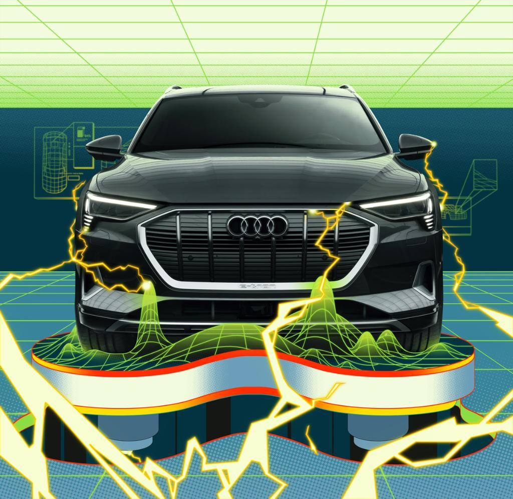
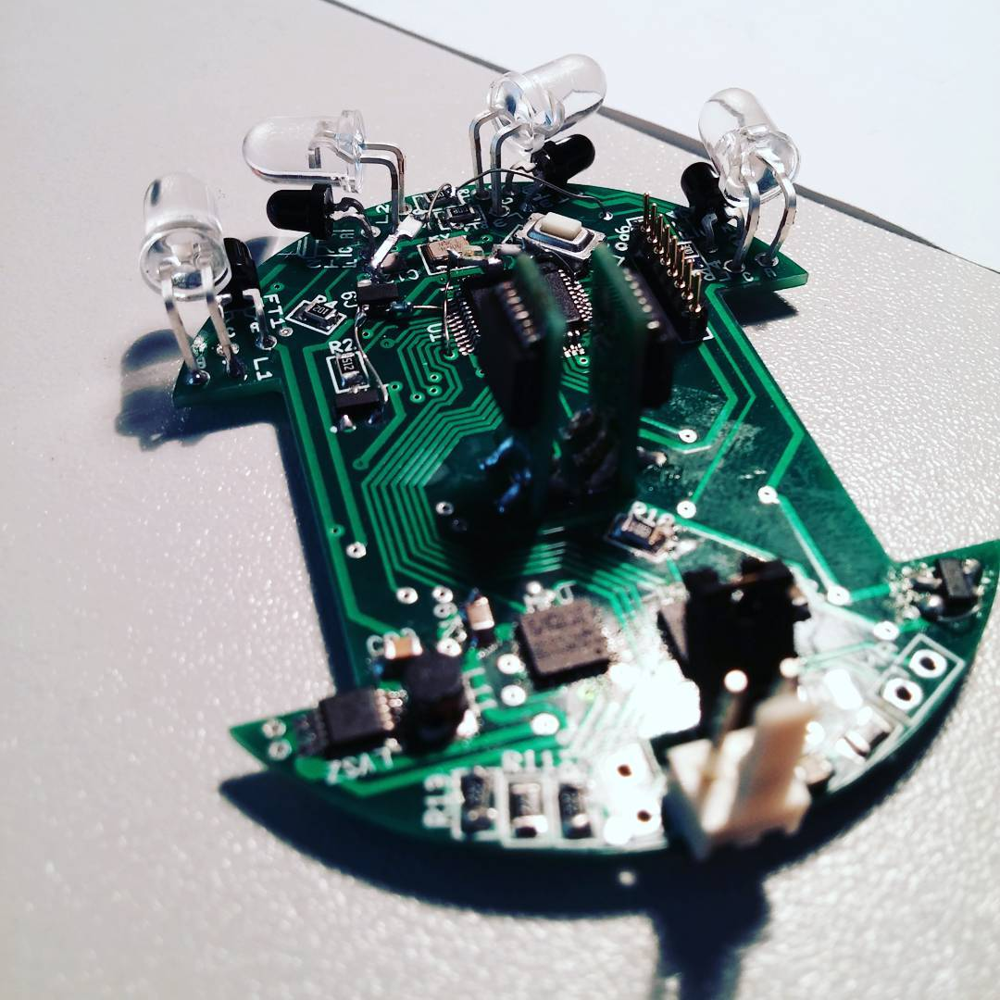
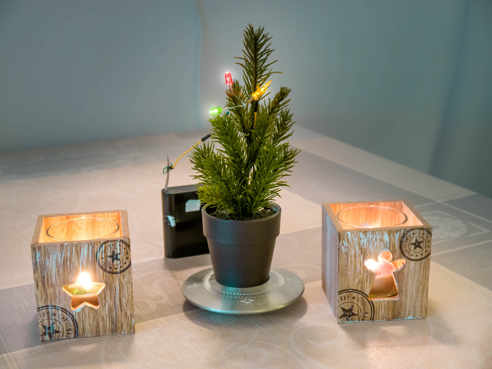

I'm 23 years old, hungarian, currently living in Munich, Germany.
Since October 2018 I'm enrolled at the Technical University of Munich (TUM) working on my Robotics, Cogniton, Intelligence Master's. While the theoreticals are great (and I really honestly am amazed at the quality of lectures), I recently started acquiring some technical knowledge in the maker-space. Some interesting projects may follow.
Before that, I finished my Mechatronical Engineering Bachelor's degree at the Technical University Budapest (BME), including one Semester that I spent in Karlsruhe (KIT). In these years I met the most amazing and interesting people, built long lasting friendships, and our core group still meets up regularly.
Some interesting work of mine
Since highschool I'm drawn to web development. I tought myself html5 css3, javascript, jQuery, PHP, mySQL, A-Frame. In Munich I've been getting into python.
My bachelor's thesis is about visualizing public transport of Budapest in VR in the browser. The user could see the local scene of nearest bus stops and their respective timetables by opening a website, and holding their phone in the right direction.
Currently I'm about to familiarize myself with node.js and with some python libraries, like pytorch and pandas.
Recently I did the 3D printer course at my local maker-space, where they've got a bunch of Ultimakers. While I had great success at managing lasercuts in the allotted time, I felt uneasy about the possibility of letting a failed print run for 20 hours. Not knowing much about the topic, I also feared it would be hard for me to experiment with all the variables, like bed temperature, extrusion temperature, etc. But I also couldn't justify spending close to $1000 dollars for a 3D printer that I can just use for free at the maker-space. So when I came across the MPSMV2 on Conrad, I basically impulse-bought it. I don't usually buy stuff on the first day of discovery, but after seeing that the MonoPrice model has a heated bed and is compatible with CURA (the slicer program for the Ultimaker printers), I was convinced it's good enough for experimentation. €180 in my view is cheap enough to warrant not-perfect printing quality for the sake of experimentation. If ever in my life I plan to use or buy a serious printer, I'll know the ins and outs, because I'll have sat considerable hours working with and staring at a maker-grade one.
First prints with PLA
I've had impressively few failed prints with PLA. The standard settings in Cura are great, and the only thing I've changed was the printhead temperature, which I lowered by 5°C to 195°C improve on stringing.
With the size of the machine, it fits on my tiny desk. The only trick I engaged is printing some spool holder bearing that let me put the spool on top of one of the speakers. Naturally, the bed-size is small as well. I did anticipate some extra work to make designs work that don't fit inside the working area of 120*120*120mm. But I hadn't truly considered the fact that a standard 6.25U spacebar would barely fit inside it (6.25*19.05=119.0625mm) until I had it stand on my desk.
Because of the size, when i designed a test plate to see Cherry Stabilizers in action, I ended up having to cut corners (sorry). Rotating it by 45 degrees would make it fit, and now I've got a stupid layout that allows me to see how different width keys will work out. I'm especially worried about the ISO Enter key about which I couldn't find any real info. There's no documentation I could find about where to place the switch underneath it, so I ended up reverse-engineering some open course PCBs, but I still want to see it in real life before ordering my own plate and PCB.
In action it's too loud tolet me comfortably sleep in the same room, so currently I'm not printing through the night. But it's not too loud to make me want to leave the computer during the day. Although I'll admit I'm biased; I enjoy watching the thing, and intercepting failed prints early on.
First I was impressed by how nuanced little details I'm able to print. I did however notice two complications:
Firstly, the first layer always gets squished a bit, which I tend to fix with a box cutter, when exact measurements matter. Later I learned it's called Elephant Foot, and the Prusa Slicer adresses it on default now. Fortunately I don't care about it enough to look up whether Cura has a similar feature or not.
Secondly, I had to re-drill some holes in post, as they came out too small. And since PLA has a relatively low melting temperature, it isn't well suited for machining. So I decided to print a test geometry to see whether inaccuracies are "reliable", because then I could account for it in the design.
Sure enough, all the holes are about 0.2mm smaller, and all the outer dimensions are about 0.1mm thicker. That means if I want an M5 screw to thightly grip the material, a 5mm drill hole will work. And if I need it to loosely fit inside it, the drill hole better be 5.2-5.4mm in diameter.
Not long after the first successes I decided I have to buy a few more spools with other colors, because this is fun. So I read some not-enough amount about the differences in filament material, and decided to buy ABS filament this time.
I knew ABS needs higher temperatures, and that it's subject to warping, but I hadn't really anticipated how annoying warping would be. To be honest, I was more worried about the supposedly 80-90°C bed temperatures that were recommended everywhere, despite the default Cura setting being 75°C.
Benchy did great at first, and I was happy with the result, until the roof broke off for seemingly no reason. I quickly learned I had to put tape on the head cooler, otherwise the extruded material would warp and/or harden too soon, and not stick on small surfaces, like the B pillar of Benchy.
I managed to print some Cherry-style keycaps for my BDN9 inspired hand wired macro pad. There's some sk6812 backlights installed, as I intend to test a number of QMK features before I truly buy myself into the mechanical keyboard hobby. I've discovered one of my arduinos is a micro one, with an Atmel processor, which is supported by QMK. I was happy to discover this, because I initially didn't think there was a simple/cheap way for me to test the flashing and configuring of QMK, but things I already have at home are cheap, so this is great!
The Cherry MX keycap .stl file I found on Thingiverse proved to be impossible to slice in a smooth way. There's some advances on this front to be read about from Hamburg, but no quick and easy way for me to try yet.
Sadly though, I failed four times on an smd tray. The first few layers seem to stick fine, but as the walls cool off, they introduce enough tension to tear up the corners later. Not sure how to go about this. I'm considering changing the geometry in a way where it's less affected by the warping of later layers, but now I miss the simplicity of PLA. PETG is said to unify advantages of both, but for now I want to try and make ABS work. I can semi-reliably print smaller parts at least, so that's a start!
· 2020-04-11 ·
Audi internship

After I won a scholarship from Audi Hungária, which helped me finance my 5th. semester in Kalrsruhe, they were happy to later see me apply for an internship.
So I became an engineering intern at the electric drivetrain manufacturing section. Our team worked out the nuances of manufacturing technology, which led up to the opening of the electric motor factory in the summer of 2018.
In the first few weeks I familiarized myself with the testing machines and operated them at times. This includes high voltage tests at various stages of assembling, leakage tests and an overview of the workings of the break tester.
Excel for the win
As I was fresh and new, I've been given a wide range of makeshift tasks, which surprisingly often sat me in front of an excel sheet. One time I was asked to import >1000 .CSV files into a sheet, which had a macro implemented, but was still incredibly tedious and repetitive. It took me two full days to finish. After that I started tinkering with some basic VBA codes from StackOverflow, and managed to write a program, that automatically read all of the 2000 files from the specified folder, and included them in the original sheet without screwing up the diagrams. I even made it make a safe copy of itself first, just to be sure. And I had it freeze the screen for the time it computes, and then popup when it's done.
The success I got from this new program made me update another Excel sheet we used often, which contained the daily report, and was sent by email daily to our boss. I had it's previous macro cleaned up at the code level, automated the aftertouch of coloring and styling (which always gets messed up when new data are imported). But the biggest trick was making the sheet compose an email (in two languages, with correct dates) and attach itself to it. We just had to press Ctrl+E, have a glance at the newly appeared email draft, and press send. The basic building blocks of all of these VBA programs are included in my github page.
· 2019-03-20 ·
Micromouse competition
In 2017 a friend of mine and I decided to participate in the micromouse competition that was organized mostly by our university.

First we decided on a rounded form factor for easy turning, and we designed to be narrow enough to be able to go diagonally in the labirinth, which still makes me chuckle a little bit.
We went through many design iterations in NI Ultiboard, until we were confident enough to order the PCB. Then came the soldering part, which needed many tries, and seemed even near impossible at times. I think it took us 4 mice to get the hang out of it, and at that point any one of us was quick to assemble a fifth one in a few hours.
STMCubeMX and Keil were our software of choice, which we used to initialize the processor, and to program it. In the world of $5 Arduinos it's actually amazing, how hard it is to get something like this to work from the ground up. But ultimately we managed to implement a PD Control on the otherwise erratic motors, and had the mouse go straight. We were also able to read sensor data (IR, Gyro, magnetic encoders). The picture on the left shows the actual pinout of our mouse.
The sensor readings seemed promising: we did tests in different light conditions, and the powerful IR emitters proved to be very confident, and showed a consistent curve. The range between 1-10cm is useful for measuring distance, before and after that the resolution won't hold up. The motor drivers seemed linear, even thought the motors themselves disagreed.
Here's the final runner:
· 2019-02-16 ·
Breathing Budapest
Seeing the work of Tjukanov I was inspired to use the public transport data of Budapest, and visualize the activity through the day. Here's the result:
I wrote a php script that slowly but surely read through the trips by minute, gathered gps data of these routes, and passed it onto the page. Javascript would take over next, open a canvas, draw the frame (with very low opacity lines), and download it automatically to a folder. After downloading the frame, I'd load the page with the next timestamp in the url, and this went on for 2 hours. Not having to click "Ok" on the download prompt is something that's only hardly possible, but it is, which freed me up to watch a movie.
Admittedly this method feels like repairing the tourbillon of a Jaeger-LeCoultre Cronometer using tools provided by IKEA, but I enjoyed learning into these programming languages, and really wanted to succeed "without outside help".
In hindsight it shouldn't have taken me so long to realize that my messed up gps-to-coordinate conversion rotated Budapest by 90 degrees. It's fun to see in the finished project though, how the boulevard in the center is the only route going uninterrupted all night.
· 2018-01-12 ·
Smart IoT Christmastree

Summed up in one word, it's an off-the-grid, Bluetooth LE Smart Christmastree, running on Arduino and Raspberry Pi wirelessly in turns. It's fully off-the-grid, and has a charging time of 405 Method Not Allowed seconds. The individual LEDs are seperately addressed via blockchain technology.
There's a neural network running silently in circles, which enables the user to use the christmastree as a one-way chatbot, for when you just want no interrupts to happen.
Some cons, that I'm still trying to figure out: The resemblence to a real christmas tree places my project in the middle of the uncanny valley, which is why it's so well received in Japan.